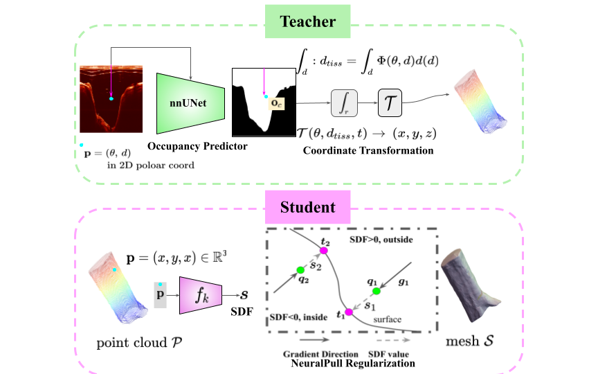

About Me
I am a Postdoctoral Researcher at the Department of Neurological Surgery, UC San Diego.
I received my Ph.D. in Computer Science from UNC-BIAG Lab,
UNC-Chapel Hill in 2025,
advised by Prof. Marc Niethammer.
Previously, I received my M.Sc. degree from
School of Biomedical Engineering,
Shanghai Jiao Tong University (SJTU) in 2020,
under the supervision of
Prof. Qian Wang
in the Medical Imaging Computing Lab.
Before that, I received my B.Eng. degree from
Honors College at
Northwestern Polytechnical University in 2017.
I build AI that knows what it knows — and admits what it doesn't. My research centers on spatiotemporal
representation learning with a focus on interpretability and uncertainty quantification, drawing on tools
from geometry, statistics, and neural representations to tackle problems in healthcare and beyond.
Selected Publications

PRISM: Probabilistic Neural Shape Representation with Fisher Information for Uncertainty-Aware Statistical Shape Analysis
Yining Jiao, Sreekalyani Bhamidi, Carlton Jude Zdanski, Julia S Kimbell, Andrew Prince, Cameron P Worden, Samuel Kirse, Christopher Rutter, Benjamin H Shields, Jisan Mahmud, Marc Niethammer
preprint

LucidAtlas: Learning Uncertainty-Aware, Covariate-Disentangled, Individualized Atlas Representations
Yining Jiao, Sreekalyani Bhamidi, Carlton Jude Zdanski, Huaizhi Qu, Julia S Kimbell, Andrew Prince, Cameron P Worden, Samuel Kirse, Christopher Rutter, Benjamin H Shields, Jisan Mahmud, Tianlong Chen, Marc Niethammer
preprint

NeuralOCT: Airway OCT Analysis via Neural Fields
Yining Jiao, Amy Oldenburg, Yinghan Xu, Srikamal Soundararajan, Carlton Zdanski, Julia Kimbell, Marc Niethammer
preprint

NAISR: A 3D Neural Additive Model for Interpretable Shape Representation
Yining Jiao, Carlton Zdanski, Julia Kimbell, Andrew Prince, Cameron Worden, Samuel Kirse, Christopher Rutter, Benjamin Shields, William Dunn, Jisan Mahmud, Marc Niethammer
ICLR 2024. Spotlight, top 5%.

cuRadiomics: A GPU-Based Radiomics Feature Extraction Toolkit
Yining Jiao, Oihane Mayo Ijurra, Lichi Zhang, Dinggang Shen, Qian Wang
MICCAI Workshop on Radiomics and Radiogenomics in Neuro-oncology using AI. Oral, top 10 of submissions.

iSegFormer: Interactive Segmentation via Transformers with Application to 3D Knee MR Images
Qin Liu, Zhenlin Xu, Yining Jiao, Marc Niethammer
MICCAI 2022.

Intracluster Structured Low-Rank Matrix Analysis Method for Hyperspectral Denoising
Wei Wei, Lei Zhang, Yining Jiao, Chunna Tian, Cong Wang, Yanning Zhang
IEEE Transactions on Geoscience and Remote Sensing
Talks
-
Radiomics-Driven Deep Reinforcement Learning in Detecting Brain Tumor Lesions.
SJTU Graduate Student Academic Forum, July 2019.
1st Prize in Oral Presentation Group
-
Can Radiomics Features Boost the Performance of Deep Learning upon Histology Images?
IEEE Conference on Medical Imaging Physics and Engineering, Nov 2019.
Excellent Paper Award
-
ConvRadiomics: Convolutional Radiomics Feature Extraction Toolkit
IEEE Conference on Medical Imaging Physics and Engineering, Nov 2019.
Honors & Awards
- ICML Workshop on Computational Biology Fellowship, 2021.
- Outstanding Graduate of Shanghai (only 4 from department), 2020.
- SJTU Excellent Graduate Student Award (only 2 from department), 2019.
- Excellent Undergraduate Thesis in NWPU, 2017.
Experiences
Postdoctoral Researcher
Topic: Uncertainty-Aware Shape Modeling and Medical Image Analysis.
Ph.D. Student
Topic: Interpretable and Uncertainty-Aware Shape Analysis for Healthcare.
M.Sc. Student, advised by Prof. Qian Wang
Topic: GPU-Accelerated Radiomics and Medical Image Analysis.
Student Researcher
Topic: Hyperspectral Image Denoising.
Academic Services
Conference Reviews: CVPR, ICCV, ECCV, ICML, ICLR, AISTATS, AAAI, MICCAI.
Journal Reviews: IEEE TPAMI, IEEE JBHI, Neural Networks.
Misc
In my free time, I practice Tarot de Marseille and create knowledge sharing content about tarot reading — feel free to reach out if you're interested! I also enjoy gardening and writing poems. I was invited to Chinese Poetry New Discovery Poetry Camp in 2018 as one of the twelve selected campers and some of my works were published in Poetry Periodical, Chinese Poetry, etc.